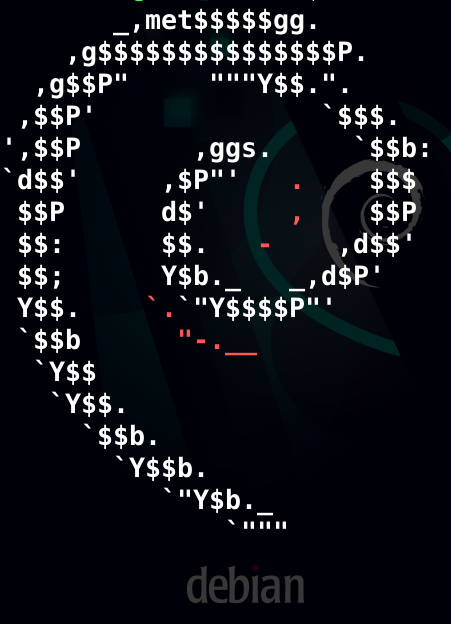

...Linux - some love it, others hate it. (I love it)
There are many distros (maybe too much, that's true), but thats also a pro:
If you want to customize your operating system or you want it for a special kind of work (e.g. Raspberry Pi, Server) Linux is your solution!
Here, i'm gonna introduce my favourite distro, debian ...so i could have named this site also "Debian", but I think "Linux" fits better, cause in the end many pros and cons for Debian are also valid on other distros (ubuntu, Mint, Raspbian, but even Arch or Manjaro aren't something complete different).

The Logo of Debian GNU/Linux
...So, first at all this is only a fun project, which isn't meant to take too serious ;)
Ok, lets convince you for choosing debian for at least one coputer in your house :)
Debian is a system, which is designed for many (many, many, many) archictures and includes all necessary things after install (for some too much, for others less). It comes with many (many, many, many) Desktop Envoirments - all windows and macOS users only "What??? Architectures, Desktop Envoirements???" - I'll tell.